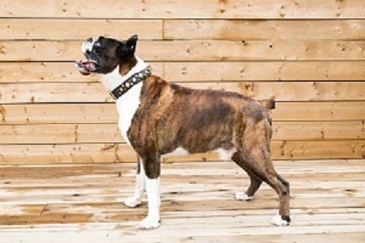
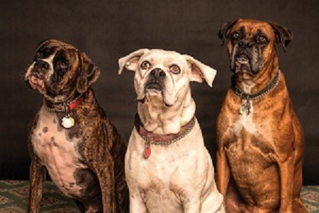
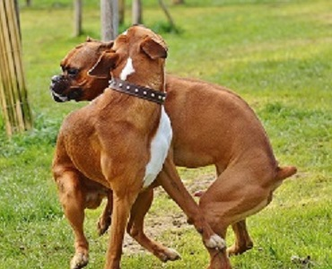
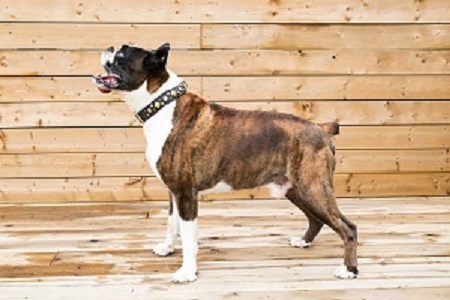
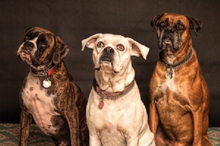
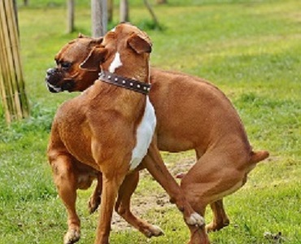
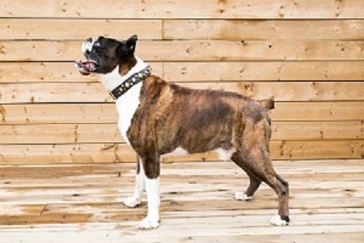
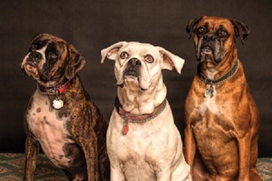
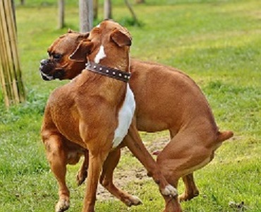
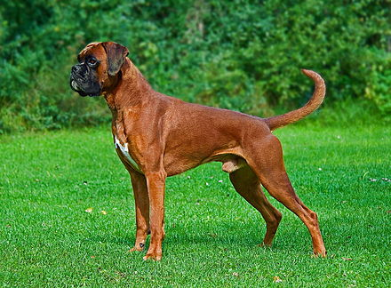

Pictures


 





The head is the most distinctive feature of the Boxer. The breed standard dictates that it must be in perfect proportion to the body and above all it must never be too light. The greatest value is to be placed on the muzzle being of correct form and in absolute proportion to the skull. The length of the muzzle to the whole of the head should be a ratio of 1:3. Folds are always present from the root of the nose running downwards on both sides of the muzzle, and the tip of the nose should lie somewhat higher than the root of the muzzle. In addition a Boxer should be slightly prognathous, i.e., the lower jaw should protrude beyond the upper jaw and bend slightly upwards in what is commonly called an underbite or "undershot bite". Boxers were originally a docked and cropped breed, and this is still done in some countries. However, due to pressure from veterinary associations, animal rights groups, and the general public, both cropping of the ears and docking of the tail have been prohibited in many countries around the world. A line of naturally short-tailed (bobtail) Boxers was developed in the United Kingdom in anticipation of a tail docking ban there; after several generations of controlled breeding, these dogs were accepted in the Kennel Club (UK) registry in 1998, and today representatives of the bobtail line can be found in many countries around the world. However, in 2008 the FCI added a "naturally stumpy tail" as a disqualifying fault in their breed standard, meaning those Boxers born with a bobtail can no longer be shown in FCI member countries. In the United States and Canada as of 2012, cropped ears are still more common in show dogs, even though the practice of cosmetic cropping is currently opposed by the American Veterinary Medical Association. In March 2005 the AKC breed standard was changed to include a description of the uncropped ear, but to severely penalize an undocked tail. The tail of a boxer is typically docked before the cartilage is fully formed, between 3–5 days old. This procedure does not require any anesthesia or sutures when performed at this young age.
The Boxer is a short-haired breed, with a shiny, smooth coat that lies tight to the body. The recognized colors are fawn and brindle, frequently with a white underbelly and white on the feet. These white markings, called flash, often extend onto the neck or face, and dogs that have these markings are known as "flashy". "Fawn" denotes a range of color, the tones of which may be described variously as light tan or yellow, reddish tan, mahogany or stag/deer red, and dark honey-blonde. In the UK and Europe, fawn Boxers are typically rich in color and are often called "red". "Brindle" refers to a dog with black stripes on a fawn background. Some brindle Boxers are so heavily striped that they give the appearance of "reverse brindling", fawn stripes on a black body; these dogs are conventionally called "reverse brindles", but that is actually a misnomer—they are still fawn dogs with black stripes. In addition, the breed standards state that the fawn background must clearly contrast with or show through the brindling. The Boxer does not carry the gene for a solid black coat color and therefore purebred black Boxers do not exist. - Wikepedia.org



The Boxer is a medium-sized, short-haired breed of dog, developed in Germany. The coat is smooth and tight-fitting; colors are [[Fawn (colour)|fawn brindled or white, with or without white markings. Boxers are brachycephalic (they have broad, short skulls), have a square muzzle, mandibular prognathism (an underbite), very strong jaws, and a powerful bite ideal for hanging on to large prey. The Boxer was bred from the Old English Bulldog and the now extinct Bullenbeisser which became extinct by crossbreeding rather than by a decadence of the breed. The purpose of the crossbreeding was the wish to eliminate the excessive white color of the breed, and the necessity of producing thousands of dogs for one of the most popular breeds in the world. The Boxer is part of the Molosser group. This group is a category of solidly built, large dog breeds that all descend from the same common ancestor, the large shepherd dog known as a Molossus. The Boxer is a member of the Working Group.[4] The first Boxer club was founded in 1895, with Boxers being first exhibited in a dog show for St. Bernards in Munich the next year. Based on 2013 American Kennel Club statistics, Boxers held steady as the seventh-most popular breed of dog in the United States for the fourth consecutive year.[5] However, according to the AKC's website,[6] the boxer is now the eighth-most popular dog breed in the United States. Boxers have white and black markings.[7]
